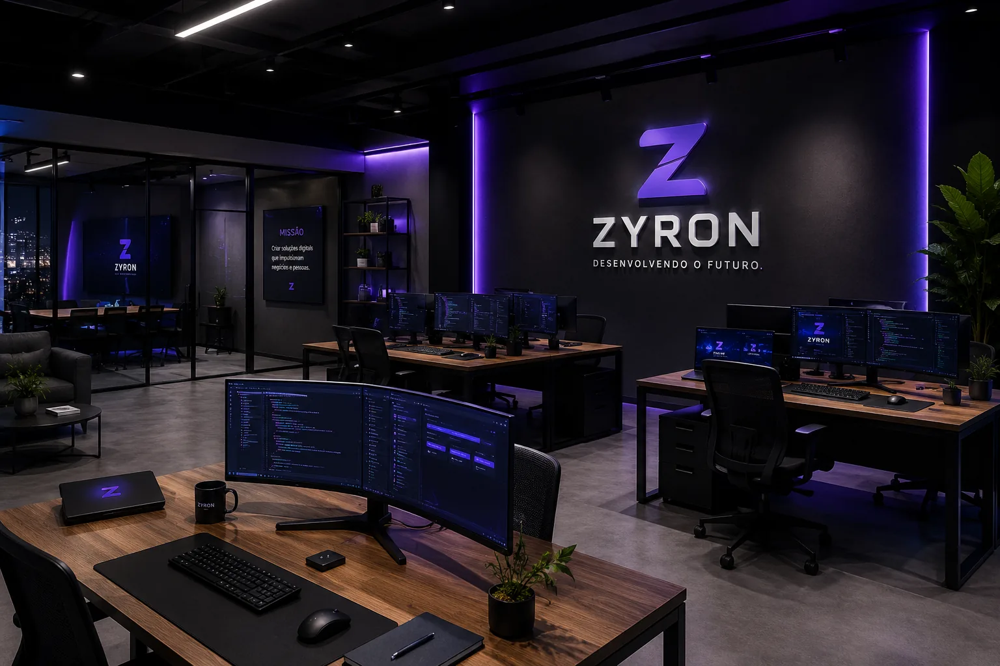

Transformar necessidades reais em soluções digitais eficientes.
Desenvolvemos produtos e projetos que ajudam empresas a vender, organizar processos e evoluir com mais confiança.
Transformamos ideias em soluções digitais através de tecnologia, design e estratégia. Conheça nossa história e a parceria que fortalece nossos projetos.
A ZYRON nasceu para desenvolver soluções digitais que unem desempenho, design e experiência. Cada projeto é planejado para representar a identidade do cliente e gerar resultados reais.
Mais do que criar sites ou sistemas, buscamos construir produtos digitais modernos, rápidos e preparados para evoluir junto com o crescimento de cada empresa.

Desenvolvemos produtos e projetos que ajudam empresas a vender, organizar processos e evoluir com mais confiança.
Queremos construir relações de longo prazo e soluções que acompanhem novas etapas do negócio.
Trabalhamos com comunicação transparente, atenção aos detalhes e respeito à realidade de cada cliente.
Cada decisão parte do problema que precisa ser resolvido e da experiência que queremos entregar.
Entendemos o negócio e as prioridades.
Organizamos escopo, conteúdo e tecnologia.
Desenvolvemos, testamos e refinamos.
Preparamos a solução para continuar crescendo.
Cada empresa atua em sua especialidade para oferecer uma jornada mais completa, sem misturar responsabilidades ou identidades.